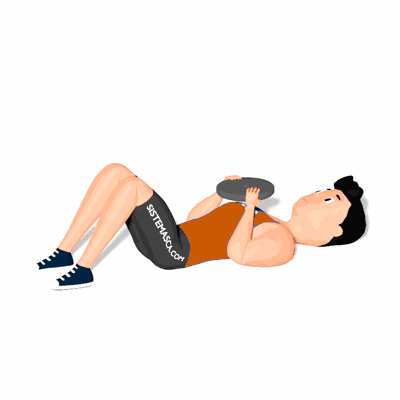

Abdominal Supra com Anilha

O exercício trabalha o fortalecimento e hipertrofia da região do abdome com mais intensidade por utilizar carga.
Ficha Técnica
Tipo: Funcional
Grupo Muscular: Abdome
Aparelho: Nenhum
Músculos: Nenhum
Como realizar
- Deite-se com as costas sobre o chão ou em um banco plano;
- Junte as pernas e flexione-as levemente;
- Segure uma anilha com as duas mãos;
- Eleve o seu tronco em sentido aos joelhos, sempre dirigindo a anilha à frente do peito;
- Retorne lentamente à posição inicial.
 RC STORE
RC STORE